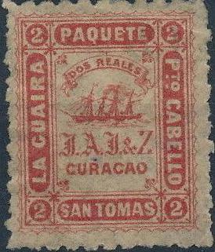
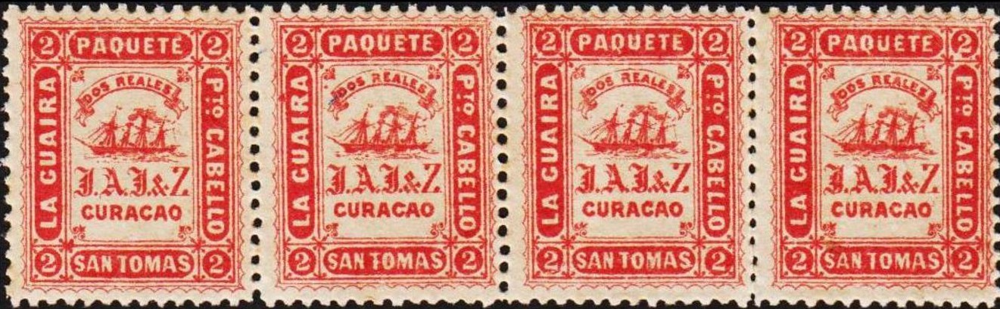
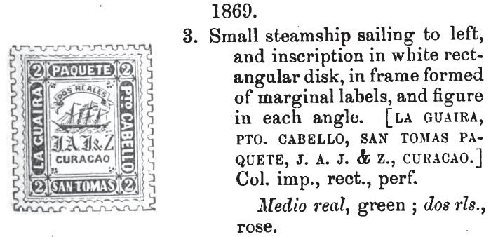
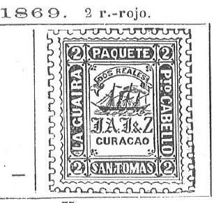
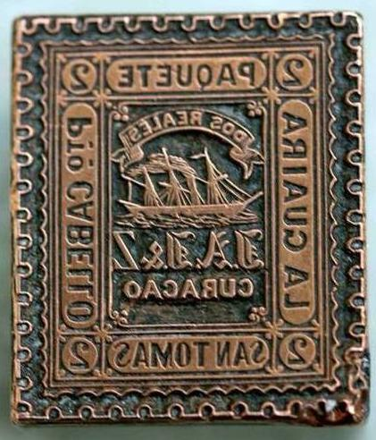
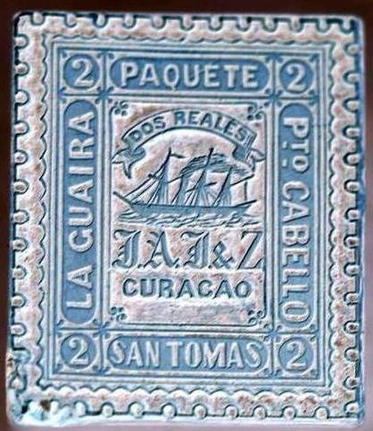
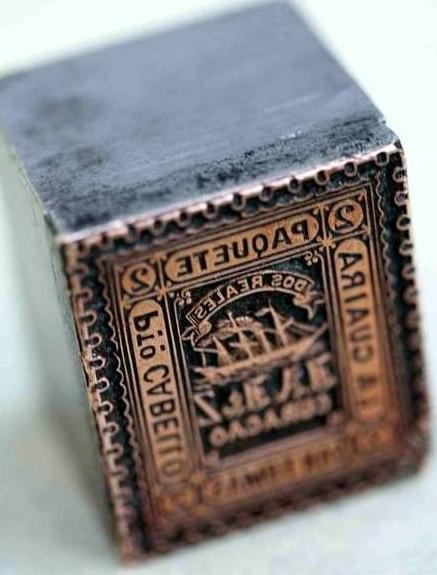

Return To Catalogue - San Tomas La Guaira, part 1 - San Tomas La Guaira, part 2 - Danube (Donau) Steam Ship Company
Note: on my website many of the
pictures can not be seen! They are of course present in the
catalogue;
contact me if you want to purchase the catalogue.
'The private ship letter stamps of the world Part 1 The Caribbean' by S.Ringstrom and H.E. Tester (1976?). Includes information about the forgeries, reprints, cancels etc.
1/2 r green 2 r red
Value of the stamps |
|||
vc = very common c = common * = not so common ** = uncommon |
*** = very uncommon R = rare RR = very rare RRR = extremely rare |
||
| Value | Unused | Used | Remarks |
| 1/2 r | *** | *** | |
| 2 r | *** | *** | |
The original stamps were printed from four transfers (all very slightly different) for each value.
Medio Real, the four types; from left to right types 1 to 4.
The four types of the Medio Real are (See also
'The Private Ship Letter Stamps of the World', part 1 the
Caribbean by S.Ringstrom and H.E.Tester):
First type: upper left corner has a blotch of ink in it
Second type: scallop left and slightly below the "G" of
"GUAIRA" has a blotch of ink in it.
Third type: Spot of ink below the 'arrow' ornament in the lower
right corner and white dot in the lower right part of the lower
left 1/2.
Fourth type: bottom left hand side has missing scallops.

The four types of the Dos Reales (enlarged image), from left to
right types 1 to 4.
Dos Reales:
First type, white dot on upper left of "P" of
"PAQUETE";
the second type has a white dot between the second "E"
and "T" of "PAQUETE",
the third type has a break in the frameline below the
"T" of "TOMAS"
and the fourth type has a large break in the frameline to the
right of the label containing "DOS REALES".
See also 'The Private Ship Letter Stamps of the World', part 1
the Caribbean by S.Ringstrom and H.E.Tester.

Oval cancel on 2 r stamp.
Forgeries exist. A complete description (in Spanish) of all four known forgeries can be found at: http://www.mystamps.net/venezuela/identificacion/paquete.html.
Reprints with perforation 15x15 exist. The were printed from different plates with 5 transfers for each value.


Reprints.
First forgery (most common one made by Spiro)
The first stamp has a 4 rings cancel that has never been used by this company. The others also have typical Spiro cancels. Also the 'J's of 'J.A.J.&Z' are different; they only have one cross-line in the middle, wheras the genuine stamps have two (see pictures above).
Note that in some of the above forgeries a second cancel is applied, in order to try to obscure the 'Spiro-cancel'.
In the second forgery, there is no dot behind the "J" of "J.A.J.&Z" and the "O" of "CURACAO" is too high up. In my opinion, the front of the ship is too short.
(Second forgery, reduced size)


Second forgery, both values
Third forgery (only known in the value 2 r, sorry, no picture available yet): the second "E" of "REALES" is placed too low.
Fourth forgery (only known in the value 2 r, sorry, no picture available yet): the value inscription reads "DOS I REALES" instead of "DOS REALES".







Another badly printed forgery with a line(?) cancel. I've only
seen two copies of this particular forgery.


{kind=link}
{kind=link}
{kind=link}
{kind=link}